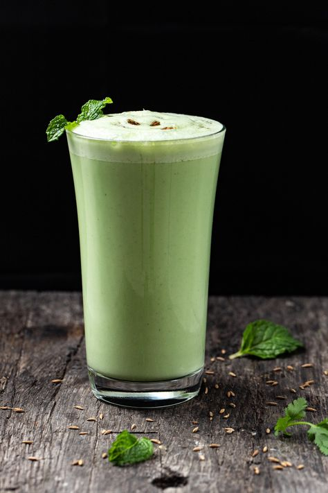

Chass (Buttermilk)
A light, cooling, and digestive Indian drink made with yogurt, spices, and herbs – perfect for hot days!

Ingredients
- 1 cup plain curd (yogurt)
- 2 cups chilled water
- 1/2 tsp roasted cumin powder
- Salt to taste
- 1 green chili (optional, finely chopped)
- 1 tbsp chopped coriander leaves
- Few mint leaves (optional)
- A pinch of black salt (optional)
Instructions
- Whisk the curd until smooth.
- Add chilled water and whisk again until well blended and frothy.
- Add cumin powder, salt, black salt, green chili, and chopped herbs.
- Mix well and chill for 15–20 minutes.
- Serve cold, garnished with coriander or mint leaves.